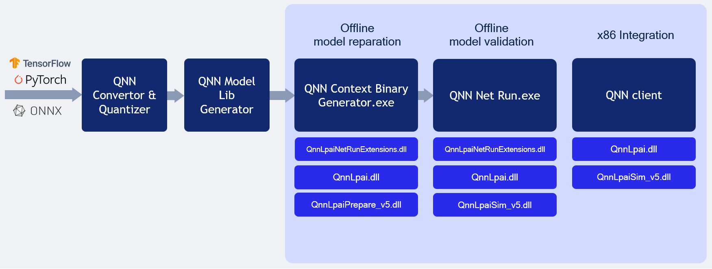

QNN LPAI Backend Emulation¶
The LPAI backend compiled for x86 platform supports both offline model generation and direct execution using a simulator. This capability allows clients to debug and deploy their models more quickly on an x86 machine without needing to interact directly with the target device.
Refer the offline model generation page to prepare configuration files ahead Offline LPAI Model Generation.
QNN LPAI Emulation on Linux x86¶
LPAI x86 Linux Simulation
Note
If full paths are not given to qnn-net-run, all libraries must be added to
LD_LIBRARY_PATH and be discoverable by the system library loader.
From Quantized model:
$ cd ${QNN_SDK_ROOT}/examples/QNN/converter/models
$ ${QNN_SDK_ROOT}/bin/x86_64-linux-clang/qnn-net-run \
--backend ${QNN_SDK_ROOT}/lib/x86_64-linux-clang/libQnnLpai.so \
--model ${QNN_SDK_ROOT}/examples/QNN/example_libs/x86_64-linux-clang/libQnnModel.so \
--input_list ${QNN_SDK_ROOT}/examples/QNN/converter/models/input_list_float.txt \
--config_file /path/to/config.json
From Serialized buffer:
$ cd ${QNN_SDK_ROOT}/examples/QNN/converter/models
$ ${QNN_SDK_ROOT}/bin/x86_64-linux-clang/qnn-net-run \
--backend ${QNN_SDK_ROOT}/lib/x86_64-linux-clang/libQnnLpai.so \
--retrieve_context ${QNN_SDK_ROOT}/examples/QNN/converter/models/qnn_model_8bit_quantized.serialized.bin \
--input_list ${QNN_SDK_ROOT}/examples/QNN/converter/models/input_list_float.txt \
--config_file /path/to/config.json
Tip
Add the necessary libraries to your LD_LIBRARY_PATH:
export LD_LIBRARY_PATH=$LD_LIBRARY_PATH:${QNN_SDK_ROOT}/lib/x86_64-linux-clang
QNN LPAI Emulation on Windows x86¶
LPAI x86 Windows Simulation

Follow these steps to run the LPAI Emulation Backend on a Windows x86 system:
Note
If full paths are not given to qnn-net-run.exe, all libraries must be added to
PATH and be discoverable by the system library loader.
From Quantized model:
$ cd ${QNN_SDK_ROOT}/examples/QNN/converter/models
$ ${QNN_SDK_ROOT}/bin/x86_64-windows-msvc/qnn-net-run.exe \
--backend ${QNN_SDK_ROOT}/lib/x86_64-windows-msvc/QnnLpai.dll \
--model ${QNN_SDK_ROOT}/examples/QNN/example_libs/x86_64-windows-msvc/QnnModel.dll \
--input_list ${QNN_SDK_ROOT}/examples/QNN/converter/models/input_list_float.txt \
--config_file /path/to/config.json
From Serialized buffer:
$ cd ${QNN_SDK_ROOT}/examples/QNN/converter/models
$ ${QNN_SDK_ROOT}/bin/x86_64-windows-msvc/qnn-net-run.exe \
--backend ${QNN_SDK_ROOT}/lib/x86_64-windows-msvc/QnnLpai.dll \
--retrieve_context ${QNN_SDK_ROOT}/examples/QNN/converter/models/qnn_model_8bit_quantized.serialized.bin \
--input_list ${QNN_SDK_ROOT}/examples/QNN/converter/models/input_list_float.txt \
--config_file /path/to/config.json
Important
Ensure that the QNN_SDK_ROOT environment variable is set correctly:
set QNN_SDK_ROOT=C:\path\to\qnn_sdk
Tip
Add the necessary libraries to your PATH:
set PATH=%PATH%;%QNN_SDK_ROOT%\lib\x86_64-windows-msvc
Outputs from the run will be located at the default ./output directory.